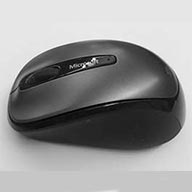
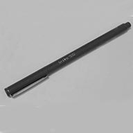
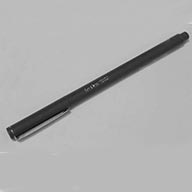

Tammy's Daily Items
.
 

Wireless Mouse
This is my trusty wireless mouse I use every day with my laptop. I feel like I'm abusing it when I click it too much doing work or playing games on my laptop. It's also kind of funny when I take my mouse to class with me and accidentally click on it when I'm trying to use a computer that I haven't connected my mouse to. I have this habit of always reaching for it instead of any other mouse.
The story behind my mouse? This is actually my second one. I had a red one before, which was a gift from my uncle. I used it for a year or two before it started to fall apart and it's rubber grip came off. I decided to buy another one of the same brand. I ended up buying this gray one since it looked the nicest, but it turns out there's no rubber grip ; - ; It works just as nice though!
Tote Bag
This is my Girls Who Code tote bag I carry around! I got it during the summer of my junior year when I attended the Girls Who Code summer immersion program. I never used the tote bag until I got to UC Davis, and I've been using it ever since my freshman year. It holds my lunch, notebooks, homework, wallet, and a whole bunch of other things. I use the bag when I need to carry my laptop around with me or large materials or projects used for my design classes. And yes, I do lose things in the bag since I put so many things in there.
Let's see. A short story about my bag... I put it into my washing machine once. It came out all crinkly and old looking. That was my first mistake: using the laundry machine instead of washing my bag by hand. Mistake number two was when I tossed the wet bag into the drying machine. It came out almost 2x smaller than the original when I finished drying it. That made me sad, but I learned my lesson now. No more machine washing and drying!
LePen
This is my gray pen called LePen (I believe it's French). I use it to take notes in my design classes. I don't know why it's only used for my design notes, but it works out just fine. I also have two more LePen pens, one in black and the other in lavendar. I received the black pen as a gift from my best friend last Christmas, and the gray and lavendar ones were from one of my shopping sprees at the UC Davis Bookstore. They're nice to write notes with, though they can bleed through thin notebook pages.
I tested out the pens before I buy them, but when I bought the gray and lavender pens, I completely forgot that I bought brush pens with similar colors already that I haven't touched yet. After coming home to add them to my pen collection, I assured myself it was fine to have double colors. Brush pens are thicker than these felt tip pens anyway, it's okay that I used a bit of money on pens (again).